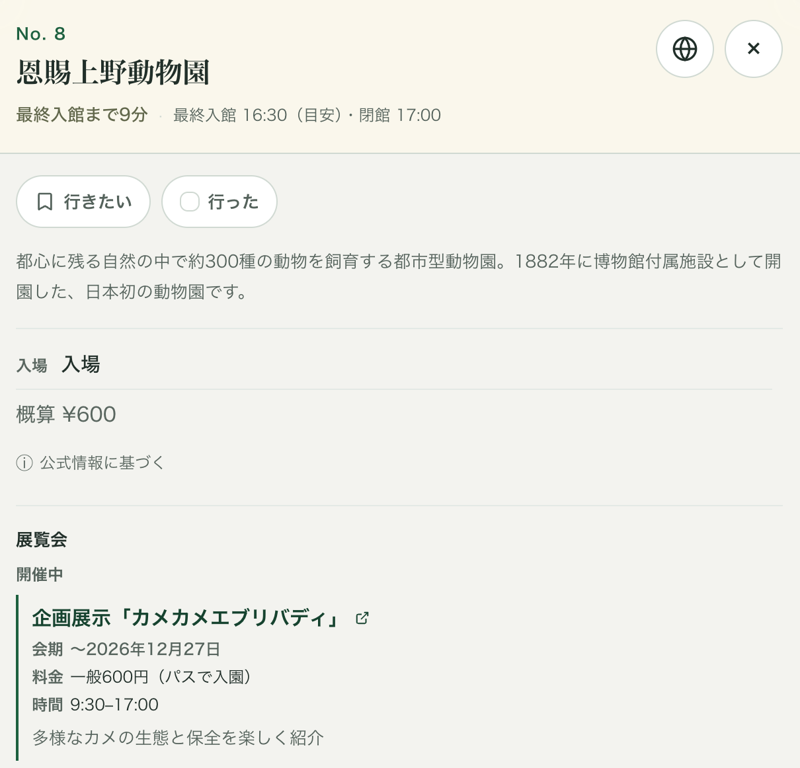

ぐるっとパス2026で行き先を決める前に確認したい4つのこと
ぐるっとパスで次にどこへ行くか決めるとき、確認しておきたいことは主に4つあります。
- その日は開いているか
- 最終入館は何時か
- 今、何を展示しているか
- その展示にぐるっとパスが使えるか
情報そのものは公式サイトにあります。難しいのは、この4つが同じ場所に書かれているとは限らないことです。以下では、それぞれ何を、どこで確認すればいいかを実例とともに整理します。
1. 「月曜休館」ではなく、その日の休館日を見る
以前、ある火曜日に行こうと思っていた美術館がありました。「月曜休館」だと覚えていたので、火曜なら開いているはずだと思っていました。
念のため出かける前に公式サイトを確認すると、その日は休館日でした。前日が祝日だったからです。確認していなければ、そのまま出かけていたと思います。曜日だけで覚えていると、こういう休館は見落とします。
たとえば、ぐるっとパス対象施設のひとつである渋谷区立松濤美術館は、休館日をこう案内しています。
毎週月曜日（国民の祝日又は休日に当たる場合は開館）
国民の祝日又は休日の翌日（土・日曜日に当たる場合は開館）— ご利用案内｜渋谷区立松濤美術館
つまりこの館では、祝日が月曜なら月曜は開館し、翌日の火曜が「祝日の翌日」として休館になります。祝日が火曜なら、月曜は通常どおり休館で、さらに水曜も休館です。
この書き方は施設ごとに違います。「祝日の翌日は休み」という共通ルールがあるわけではないので、祝日をまたぐ週は、行く予定の施設の休館日欄まで確認するようにしています。
2. 閉館時間より、最終入館を見る
もう1館行けるかどうかを考えるとき、見るのは閉館時刻ではなく最終入館です。そこに移動時間を足して、間に合うかを判断します。
ややこしいのは、最終入館が固定ではないことです。松濤美術館の場合、開館時間は展覧会の種類によって変わります。
特別展期間中：午前10時〜午後6時（金曜のみ午後8時まで）
公募展・サロン展期間中：午前9時〜午後5時
最終入館はいずれも閉館30分前までです。— ご利用案内｜渋谷区立松濤美術館
閉館が18時なのか17時なのかで、最終入館は17時30分にも16時30分にもなります。館によっては曜日でも開館時間が変わるので、「あの館は何時まで」と一つ覚えるだけでは足りません。
3. 今、何を展示しているかを確認する
同じ施設でも、時期によって展示の内容は変わります。今なにをやっているかは、ぐるっとパスの一覧ではなく、施設側の展覧会ページで確認しています。
4. その展示にぐるっとパスが使えるかを確認する
同じ施設でも、ぐるっとパスが使える展示と、対象にならない展示があります。
ぐるっとパスの公式施設一覧には、施設ごとに「常設展」「企画展または特別展」といった欄があり、そこに「入場」「割引」「−」のいずれかが入っています。「入場」ならパスの提示で入場でき、「割引」の場合は割引が適用されます。「割引」は無料入場ではなく、割引適用後の料金がかかります。「−」は対象外です。
この欄を見ただけでは決まらないこともあります。たとえば東京都美術館は、2026年9月時点で企画展が「入場」、特別展が「−」とされていて、さらに「対象展覧会開催期間は7月23日〜10月7日です」という注記が付いています。パスの有効期間内でも、この期間の外なら対象になりません。
どの展示が対象になるかは施設ごとに違うので、施設側の展覧会ページで今の会期に何をやっているかを確認したうえで、公式の施設一覧で「入場か割引か」を確認する、という2段階の確認をしています。
候補が増えるほど、確認を繰り返すことになる
ここまでの4つは、どれも公式サイトに載っています。ただ、次はどこへ行こうと決める数分の間に、休館日の注記、開館時間、今の展覧会、パスの対象を、別々のページで開き直すことになります。候補が3館あれば、3回繰り返すことになります。
情報そのものは公式サイトにあります。難しいのは、この4つが同じ場所に書かれているとは限らないことです。
PYOKOでは、次の行き先を一つの画面で比べられます
最初に作ったのは、ぐるっとパス対象施設をただ並べただけの、ごく簡単な一覧でした。ただ、使っているうちに、それだけでは足りないと分かりました。一覧で候補を選んだあと、結局その展示が対象かどうかを見に公式サイトを開き、今日開いているかを見に施設のサイトを開く、という手間は変わらなかったからです。一覧は作ったのに、調べる回数は減っていませんでした。
そこで、対象の展示や開館の情報を少しずつ足していきました。そうやって、行き先を決めるときに毎回確認していた情報を一つの画面で見られるようにしたのが、PYOKOという非公式のガイドです。

この画面では、最終入館までの時間、ぐるっとパスの適用状況、今の展示内容を、次の行き先を決めるときにまとめて確認できます。
PYOKOは、ぐるっとパスの非公式・独立ガイドです。開館情報、展覧会情報、ぐるっとパスの対象情報は公式情報をもとに確認・整理していますが、臨時休館や当日の変更がすぐに反映されない場合もあります。時間が重要な来館前には、各施設の公式情報もあわせてご確認ください。